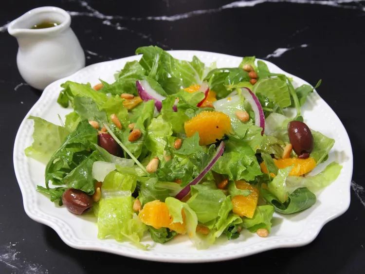

salad

Description
This is a mild, refreshing, and citrusy salad that will wake up your taste buds.
A handful of pomegranate arils is also a nice option for garnish.
Ingredients
- Dressing
- ⅓ cup extra-virgin olive oil
- ¼ cup freshly squeezed orange juice
- 1 teaspoon white wine vinegar
- salt and freshly ground black pepper to taste
- Salad
- 2 heads romaine lettuce, torn into bite-size pieces
- 1 bunch arugula
- 1 orange, peeled and segmented
- ½ cup pitted kalamata olives
- ½ small red onion, thinly sliced
- 2 tablespoons toasted pine nuts